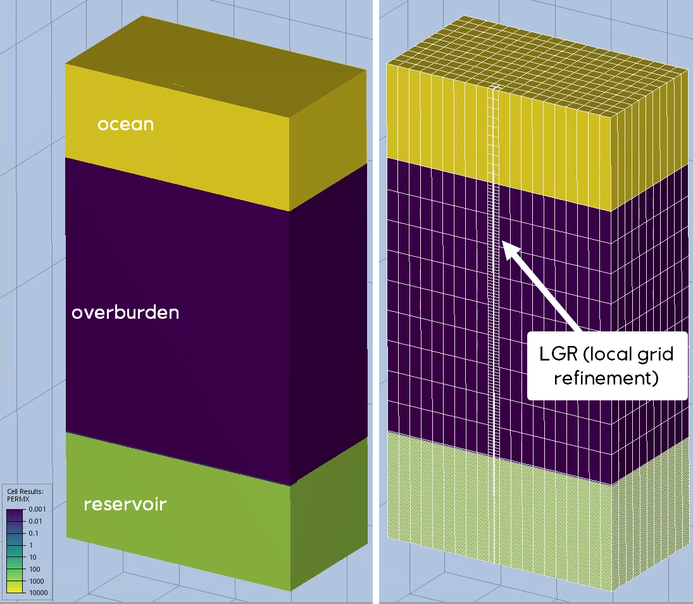
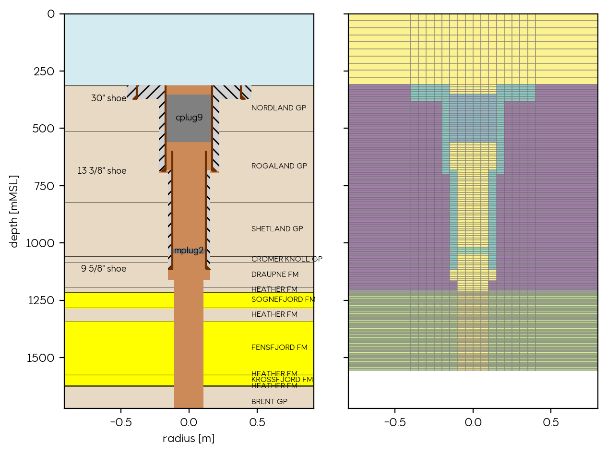

Detailed Simulation workflow
To set up a CIRRUS (PFLOTRAN-OGS) simulation run, users must first complete the pre-processing and preliminary assessment phase, which involves creating Well and Pressure instances. These instances provide the necessary wellbore and pressure data for the simulation. Additionally, users need to have template CIRRUS input files that outline the simulation setup (TEMP-0.in) and the grid (TEMP_GRD.grdecl). These templates describe a basic "shoebox" model with a layer cake grid representing the vertical space from mean sea level to the reservoir, including the ocean water column and overburden rocks.
The resulting simulation model is a 3D representation of the wellbore, with the well represented in a logically refined grid (LGR) at the center of the model. The zonation and assignment of transport properties in the model reflect the discrete sections of the well (cement bond, cement plugs, open hole). Casings are not discretely represented as grid cells but are modeled using transmissibility multipliers, which are set to zero by default to act as perfect barriers. The transport properties of the cement materials are assigned during the Well instance creation, while the properties of the reservoir and overburden rocks need to be manually set.
 Figure 1: Comparison of the template grid with updated overburden thickness (left) and the resulting grid after LGR generation (right).
Users are encouraged to use the wildcat-CIRRUS dataset located in the test_data/examples folder, along with the CIRRUS_gap notebook or the screen_well_to_gap.py script. These resources guide users through library dependencies and path setups. The first step is to create copies of the template files and update them with well-specific information and problem setup details. This includes adjusting the thickness of overburden cells and updating equilibration information to initialize the simulation with expected reservoir pressure and temperature gradients.
The equilibration is divided into two zones: 'overburden_water' for the brine in the overburden and ocean water column, and 'CO2_column' for the reservoir, defined by a gas-water contact depth and pressure. The simulation is initially set to run for zero days (START_DATE = FINAL_DATE) to perform only an initialization run, which generates the EGRID file necessary for building the LGR.
After the EGRID file is produced, the LGRBuilder functionality is used to set up the LGR, update transport properties, zonation, and equilibration zones. The user must define the upper limit of the 'CO2_column' equilibration zone, which may extend into the wellbore to represent a continuous column of CO2 connecting the wellbore to the reservoir. This upper boundary is typically defined by the base of the first cement plug above the reservoir, but the user must specify this.

Figure 2: Input wellbore visualization from the Well instance (left) and the resulting grid representation colored by permeability in the simulation model (right), with a scale similar to Figure 1.
Once the LGR is set up, the END_DATE can be updated to the desired simulation end date. Users can opt for an initialization run to verify the well representation in the simulation grid or proceed with a full simulation run. The duration of the simulation results will depend on the complexity of the problem, the number of nodes, and other setup parameters.
Upon completion of the simulation, the output can be explored using standard CIRRUS post-processing tools and techniques. Users have the flexibility to load the simulation results into visualization software such as ResInsight, which provides advanced capabilities for analyzing and interpreting reservoir simulation data. Additionally, users can leverage the modules available in this repository to optimize visualization and gain deeper insights into the simulation outcomes.
Limitations
The SCREEN workflow with CIRRUS provides a valuable approach for simulating wellbore dynamics within the context of CCS projects. However, users should be aware of the following limitations:
-
Porous Media Flow: CIRRUS is primarily designed for porous media flow simulations. While the SCREEN workflow adapts it for wellbore dynamics, it does not include the detailed physics for pipe or open wellbore modeling.
-
Geomechanics: The current workflow does not include coupled geomechanics. Overburden flow is driven by assigned transport properties without accounting for mechanical deformation.
-
Degradation and Corrosion: Complex degradation or corrosion processes within the wellbore are not modeled within CIRRUS.
-
Vertical Wells: The method is currently applicable only to vertical wells and does not support deviated or horizontal well trajectories.
-
Leakage Pathways: Leakage pathways such as holes in the casing are not automatically handled and must be manually added to the GRDECL file produced by the scripts.
-
CO2 Column Initialization: The simulation is initialized with a CO2 column, which allows for the focus on long-term leakage but does not consider short-term dynamics.
-
Boundary Conditions: The workflow does not support time-varying boundary conditions, which may be relevant for certain simulation scenarios.
-
Grid Representation: The use of a Cartesian grid to represent a cylindrical wellbore can introduce volumetric errors due to the transformation into a prism shape.
-
Uncertain Parameters: Cement permeability and transport properties of the overburden are uncertain and can significantly impact simulation results.
-
Grid Resolution: Elements smaller than the LGR resolution may not be accurately represented. While cement bonds are fully represented, their thickness might be smaller than the minimum grid size. Casings are modeled as transmissibility multipliers and act as flow barriers, which may not capture the full complexity of wellbore integrity.
These limitations should be considered when interpreting simulation results and when planning further development of the workflow to ensure that the simulations align with the specific objectives and conditions of the CCS project.